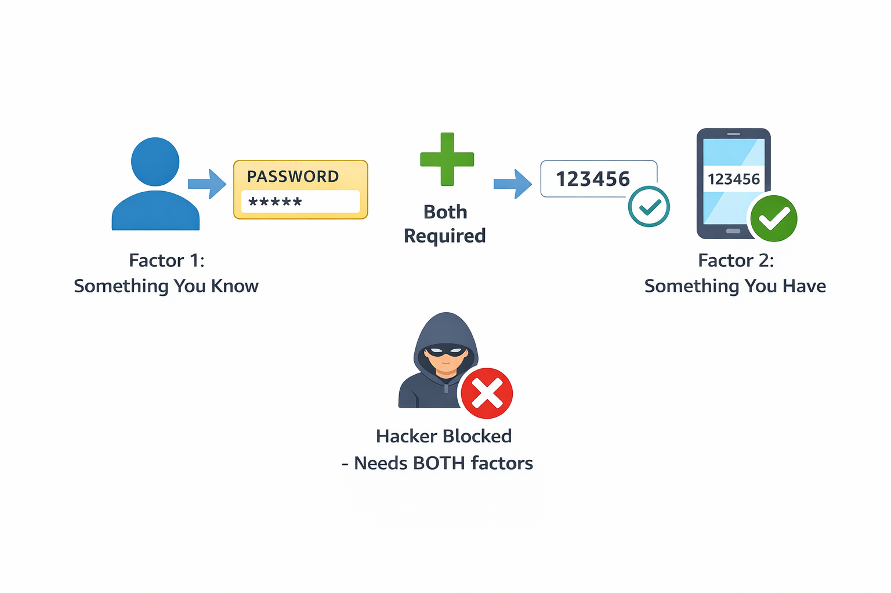
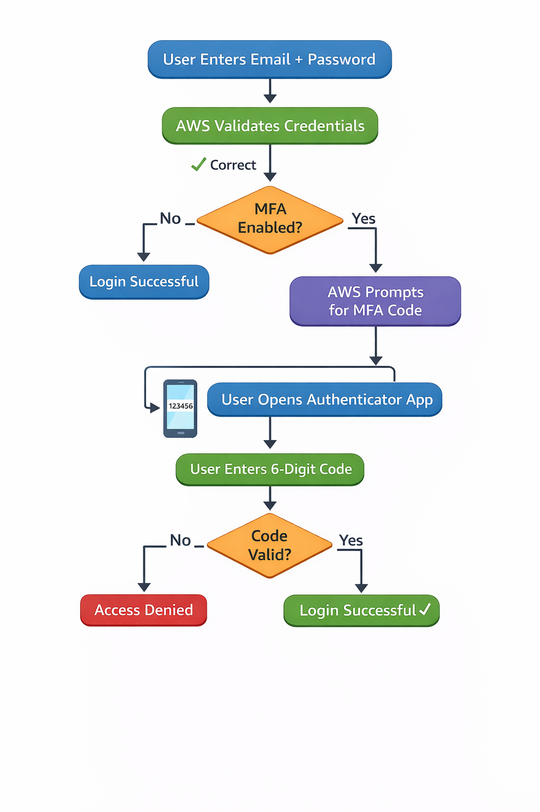
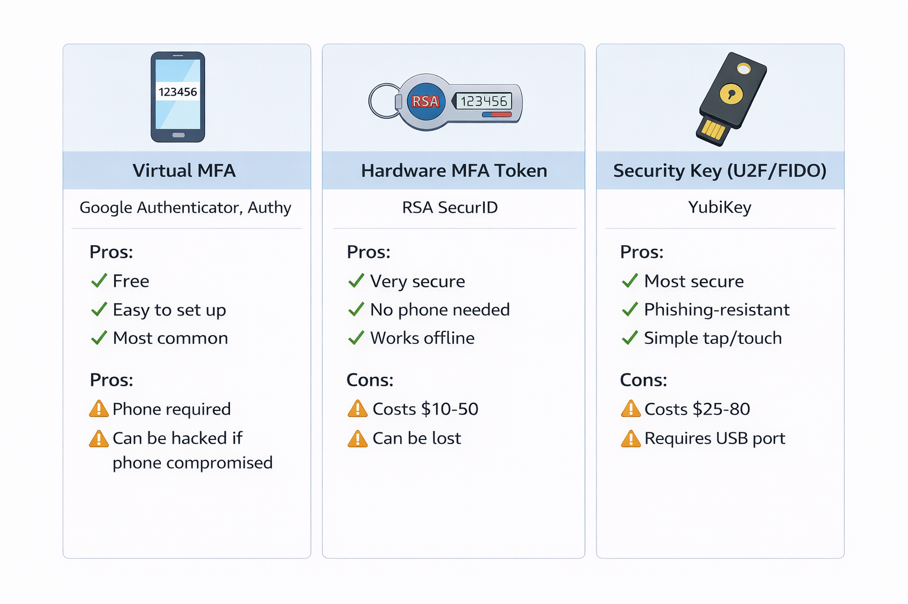
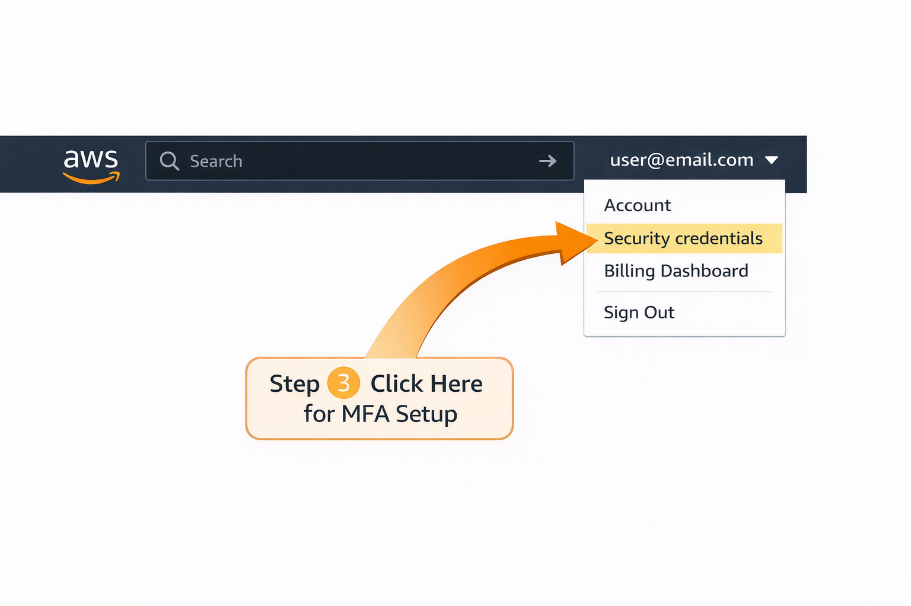
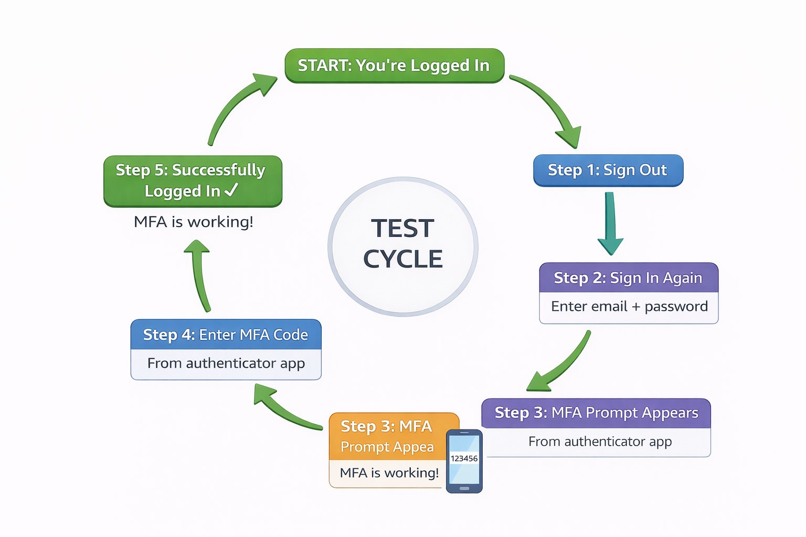

What is MFA?
Multi-Factor Authentication (MFA) means using two or more verification methods to prove your identity when logging into AWS.
Definition: MFA requires both something you know (password) and something you have (one-time code from a device) to access your AWS account.
Let's use a real-world analogy:
🏦 The Bank Vault Analogy
Imagine a bank vault that requires two keys to open:
- Key 1: Your password (something you memorized)
- Key 2: A physical key card (something you physically carry)
A thief might steal one key, but having BOTH keys at the same time is much harder. That's exactly how MFA protects your AWS account!

Figure 1: MFA Two-Factor Protection - Password alone isn't enough
How MFA Works in AWS
Here's the complete authentication flow when MFA is enabled:

Figure 2: Complete MFA Login Workflow
Step-by-Step Login Process:
- Step 1: You enter your email and password (something you know)
- Step 2: AWS validates your credentials
- Step 3: AWS prompts you for an MFA code
- Step 4: You open your authenticator app on your phone
- Step 5: You see a 6-digit code that changes every 30 seconds
- Step 6: You enter this code in AWS
- Step 7: AWS verifies the code and grants access
⚡ Key Security Point:
Even if a hacker steals your password, they cannot log in without the MFA code from your physical device. This is why MFA is considered essential for all production AWS accounts.
Types of MFA Devices in AWS
AWS supports three main types of MFA devices:

Figure 3: MFA Device Types - Choose what works best for you
1️⃣ Virtual MFA (Most Common)
Virtual MFA uses an app on your smartphone to generate codes.
Popular Virtual MFA Apps:
| App Name | Platforms | Why Use It |
|---|---|---|
| Google Authenticator | iOS, Android | Simple, free, widely used |
| Authy | iOS, Android, Desktop | Cloud backup, multi-device sync |
| Microsoft Authenticator | iOS, Android | Good for Microsoft ecosystem |
| AWS Virtual MFA | Browser extension | AWS-specific, desktop option |
✅ Recommended Choice: Use Google Authenticator or Authy for beginners. They're free, easy to set up, and work with all AWS accounts.
2️⃣ Hardware MFA Token
A physical device that generates codes without needing a phone.
When to Use Hardware MFA:
- High-security environments (banks, government)
- Users without smartphones
- Offline environments
- Compliance requirements
Cost: $10-$50 per device
3️⃣ Security Key (U2F/FIDO)
A USB physical key like YubiKey that you plug into your computer.
Security Key Features:
- Most secure option (phishing-resistant)
- No codes to type (tap the key)
- Works offline
- Popular choice: YubiKey ($25-$80)
Setting Up MFA Step-by-Step
Let's walk through enabling Virtual MFA using Google Authenticator (the most common method).
📋 Prerequisites
- ✅ AWS account with Root user access
- ✅ Smartphone (iOS or Android)
- ✅ Google Authenticator app installed (free from App Store/Play Store)
Part 1: Install the Authenticator App
Step 1: Download Google Authenticator
- iPhone: Open App Store → Search "Google Authenticator" → Install
- Android: Open Play Store → Search "Google Authenticator" → Install
💡 Alternative: You can use Authy, Microsoft Authenticator, or any app that supports TOTP (Time-based One-Time Password).
Part 2: Enable MFA in AWS Console
Step 2: Sign in as Root User
1. Go to: https://aws.amazon.com
2. Click "Sign In to the Console"
3. Select "Root user"
4. Enter your root email and password
5. Click "Sign in"Step 3: Navigate to Security Credentials
1. Click your account name (top-right corner)
2. Select "Security credentials"
3. Or go directly to IAM Dashboard → Your Security Credentials
Figure 4: Finding Security Credentials in AWS Console
Step 4: Assign MFA Device
1. Scroll down to "Multi-factor authentication (MFA)" section
2. Click "Assign MFA device" button
3. You'll see a popup windowStep 5: Choose Device Type
1. Enter a device name: "my-phone-mfa" (or any name you like)
2. Select "Authenticator app"
3. Click "Next"Step 6: Scan the QR Code
1. AWS displays a QR code on screen
2. Open Google Authenticator app on your phone
3. Tap the "+" button (bottom-right)
4. Select "Scan a QR code"
5. Point your camera at the QR code on your computer screen
6. The app adds AWS to your account list⚠️ Can't Scan QR Code?
Click "Show secret key" under the QR code. Manually enter this text into your authenticator app instead.
Step 7: Enter Two Consecutive MFA Codes
1. Look at Google Authenticator app
2. You'll see a 6-digit code (e.g., 123456)
3. Enter this code in "MFA code 1" field
4. Wait 30 seconds for the code to refresh
5. Enter the NEW code in "MFA code 2" field
6. Click "Add MFA"💡 Why Two Codes?
AWS asks for two consecutive codes to verify your authenticator app is correctly synchronized with AWS servers. This prevents timing issues.
Step 8: Verification
✅ Success Indicators:
- Green success message appears
- MFA device shows "Active" status
- Device name appears in MFA section
Part 3: Test Your MFA Setup
Step 9: Sign Out and Test
1. Click your account name → Sign out
2. Sign in again with email and password
3. AWS now prompts for MFA code
4. Open Google Authenticator → Copy the 6-digit code
5. Enter code in AWS → Sign in
6. ✅ You're in!
Figure 5: Testing Your MFA Setup - The Complete Flow
MFA Best Practices
🔒 Security Best Practices
| Practice | Why It Matters |
|---|---|
| Always enable MFA on the Root user account | Root user has unlimited access - highest security priority |
| Enable MFA on all IAM admin users | Admin users can create/delete resources and incur costs |
| Save backup codes in a secure location | You can recover access if you lose your phone |
| Use Authy for cloud backup | Allows multi-device access and recovery |
| Never share MFA codes | Defeats the purpose of two-factor authentication |
❌ Common MFA Mistakes to Avoid
Mistake #1: Only enabling MFA on IAM users, not Root
Impact: Root account remains vulnerable - hackers target root access first
✅ Solution: Enable MFA on Root user FIRST, then on IAM users
Mistake #2: Losing phone without backup
Impact: You're locked out of your own AWS account
✅ Solution: Save backup codes during setup OR use Authy with cloud backup
Mistake #3: Using same MFA app for personal and work accounts
Impact: Security risk if phone is compromised
✅ Solution: Use separate MFA apps or dedicated work phone for company AWS accounts
🎓 Exam Tips for MFA
💡 For AWS Certification Exams:
- MFA is always the recommended answer for securing root and privileged IAM accounts
- Know the three MFA types: Virtual, Hardware Token, Security Key
- Virtual MFA uses TOTP (Time-based One-Time Password) protocol
- MFA codes change every 30 seconds
- AWS requires two consecutive MFA codes during device registration to verify synchronization